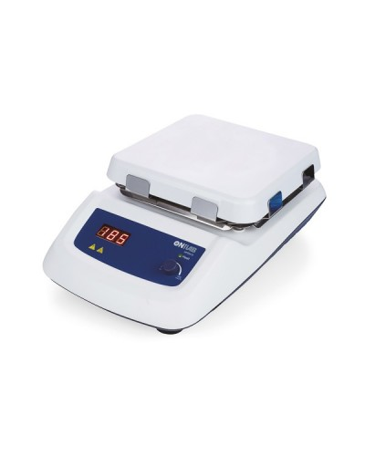

Iris :: Plytelės
Prekiaujame apdailos medžiagomis ir vonios įranga, dalijame 29 metus kauptą patirtį
Pradžia Prekės Plytelės Vonios kambarys PVC (linoleumas) Kiliminė danga Kilimai Laminatas Parketas Tapetai Sienų dekoras Klijai, glaistai ir kt. Fasadai 2020 m. plytelių tendencijos Prekių panaudojimas Grindys Šildomos grindys Lauko laiptai Vidaus laiptai Plytelių klojimas lauke Daugiabučių renovacija Mes Kontaktai Dosje Paslaugos Paslaugos internetu Prekių asortimentas E-Parduotuvė E-Išparduotuvė + Akcijos Meistrai Kaip pirkti iš e-katalogų Testai Iris Prekės PlytelėsPlytelės
Vonios Akmens masės Klinkerio plytelės Lauko plytelės Virtuvės Sienų Grindų Mozaika Dekoratyvinės plytelės Medžio imitacijos KeraminėsVonios plytelės
Įvairovė. Suderintos plytelės kolekcijose.
Akmens masės plytelės
Akmens masės plytelės, jų panaudojimas. Akmens masės plytelių ir keraminių plytelių skirtumai.
Klinkerio plytelės
Išskirtinės klinkerio plytelių savybės. Klinkerio panaudojimas laiptams, fasadui.
Lauko plytelės
Lauko plytelės terasoms, takeliams, lauko laiptams.
Plytelės virtuvei
Virtuvės plyteles rinkitės pagal patikusį raštą.
Sienų plytelės
Sienoms tinka visos plytelės.
Grindų plytelės
Kas svarbu renkantis plyteles gyvenamų patalpų grindims?
Mozaikinės plytelės
Plytelės kreiviems paviršiams. Įvairovė.
Dekoratyvinės plytelės
Dekoratyvinių plytelių įvairovė, idėjų galerija.
Medžio imitacijos plytelės
Geriausios šildomos medinės grindys.
Keraminės plytelės
Keraminės plytelės voniai, virtuvei, svetainei, holui.
‹ › Pavojingai gražios ... ir grindys
‹ ›Informacija
Žinoti, nesuklysti
Katalogai
Grožėtis, rinktis, pirkti
E-parduotuvė
Greit pirkti
Lietuvos pirkėjai mūsų įmonę geriausiai pažįsta kaip plytelių pardavėją. Ne atsitiktinai – nuo 1994 metų, kai bene pirmieji į Lietuvą įvežėme Ispanijoje pagamintas keramines plyteles, iki dabar joms skiriame didžiausią dėmesį.
Mūsų siūloma plytelių įvairovė – visa apimanti, o gamintojų geografija siekia visas, ką nors vertingo gaminančias šalis. Sekame naujienas iš Italijos, Ispanijos, Vokietijos, Lenkijos...
(Balsų: 11 ) Klausti ar komentuoti galite po kiekvienu straipsniu.
Atsakymą į klausimą rasite šiame puslapyje ir savo el. pašte.
Komentarai
Algis 2015-08-24 13:28 Laba dienaPries kuri laika man paprasius davete lauko laiptu plytelems klijuoti geru meistru kontaktus. Taip ivyko, kad jie dingo paketus sim kortele. Labai prasau, esant galimybei, atsiusti dar karta meistru kontaktu.
Pagarbiai
Algis Iris (Rytis) 2015-08-24 14:43 Laba diena, Algi,
Išsiųsime meistrų kontaktus Jums dar kartą. Šį kartą – el. paštu. Sigita 2015-09-01 23:19 Laba diena, matau kad turite plyteliu su bitutemis? Ieskome kad butu plyteles su meduciu ir bitutemis Tomas 2015-11-25 14:53 Laba diena,
kokia butu
ARTABLE MOZAIKA MIX C 298X298
ARTABLE MOZAIKA MIX D 298X298
MORAVIA CREAM 300x600
MORAVIA SAND 300x600
plyteliu 1m2 kaina? Iris (Mindaugas) 2015-11-25 16:48 Laba diena,
Artable kolekcija http://www.iris.lt/prekes/plyteles/katalogas/paradyz/artable/
yra šiemet nutraukiama. Į jūsų elektroninį paštą atsiųsime plytelių likučius ir kainas. Alma 2015-12-19 21:12 Laba diena, ar turite Klaipedos parduotuveje siu plyteliu pavyzdziu: FLASH BIANCO, FLASH BEIGE . Ar butu galimybe ju gauti parsivezti nors kelias i namus ir paziuret kaip atrodo. Iris (Mindaugas) 2015-12-21 10:52 Laba diena, Alma,
Jeigu tai Paradyz kolekcija http://www.paradyz.com/plytki/tarasowe-salon/flash
Tai šiuo metu Klaipėdoje pavyzdžio dar neturime. Turėsime sausio mėnesio antroje pusėje.
FLASH plytelės yra 2 matmenų 30*60 ir 60*60, o paviršius arba matinis, arba dalinai poliruotas. Tomas Peleckis 2016-01-21 19:15 sveiki ,ieskau kas galetu namui sudeti plyteles gal galite rekomenduoti meistra aciu Ramunas 2016-01-25 23:06 Sveiki,
Ar vis dar prekiaujate akmens masės grindų plytelėmis RELAX GRIS 450*450? Iris (Gintarė) 2016-01-26 09:08 Laba diena,
Šios plytelės mūsų ir gamintojo sandėliuose jau nėra.
Siūlome panašaus rašto tik kitų matmenų plytelę:
http://www.iris.lt/e-isparduotuve/60-60-2728-dk80-deichmann-braun-2r-ak-m-plytele tomas 2016-02-17 20:01 gal kas gali pasakyti kiek sveria plyteli vienas kvadratinis metras Edita Šarkuvienė 2016-02-19 06:53 Laba diena,
ieskome Ape Domino Beige T10/M (57x57cm) plyteliu. reiketu 2-3 kv.m Iris (Mindaugas) 2016-02-19 07:20 Tomai,
Plytelės sveria skirtingai. Svoris priklauso nuo plytelės storio (daugiausiai gaminamos 6-11mm) ir paskirties: grindų plytelės sunkesnės (tankesnė masė) nei sienų.
Pavyzdžiui:
Sieninės plytelės 20x25 ~12kg/m2, 25x40 ~14kg/m2, 30x60 ~18kg/m2; Grindinės plytelės 33*33 17-18kg/m2, 30x60 ~19-22kg/m2.
Svoris nurodomas kataloguose ir ant dėžutės. Iris (Gintarė) 2016-02-19 11:11 Edita,
Šios plytelės iš Ape Ceramica pasiūlyti negalime.
Kaip alternatyvą Jūsų išsirinktoms plytelėms galime pasiūlyti kitų gamintojų marmuro imitacijos plyteles, pvz.:
http://www.iris.lt/e-parduotuve/plyteles/kolekcijos/25-75-45-45-60-60-daino
http://www.iris.lt/e-parduotuve/plyteles/kolekcijos/50-50-sanmarco
http://www.iris.lt/e-parduotuve/59-8-59-8-p-fair-beige-2-mat-ak-m-plytele
http://www.iris.lt/e-parduotuve/29-8-59-8-59-8-59-8-travertine
Asortimentą galima apžiūrėti ir mūsų salonuose. Zita 2016-02-21 10:12 laba diena. Gal galėtumėte atsakyti į tokius klausimus:
1. Ar yra Jūsų įmonės salonas Klaipėdoje? Jeigu taiip gal galite nurodyti svetainės adresą ar kontaktus
2. Ar prekiaujate akmens masės plytelėmis, kurios tiktų salonui, nes kiek domėjausi šildomoms grindims labiausiai tinka plytelės.
3. Aš norėčiau ilgų plytelių, na panašiai apie 120 cm., o plotis irgi kiek galima platesnis.
Lauksiu atsakymo, už kurį iš anksto dėkoju. Iris (Mindaugas) 2016-02-22 14:29 Laba diena,
Informaciją apie Klaipėdos Iris saloną galite rasti šiuo adresu:
http://www.iris.lt/iris/kontaktai/prekybos-salonai/klaipeda/
Taip, plytelės puikiai tinka šildomoms grindims. Be abejo turime akmens masės plytelių Jūsų pageidaujamo 120cm matmens.
Kaip pavyzdį pateikiame dvi labai skirtingas kolekcijas:
Kolekcija Intero Bianco, Grys, Grafit, Nero, Silver SATYNA 59,8 x 119,8.
http://www.iris.lt/e-parduotuve/29-8-59-8-59-8-59-8-44-8-89-8-59-8-119-8-intero
http://www.paradyz.com/en/catalog/living-room-and-terrace-tiles/intero
Kolekcija Tigua Bianco, Beige, Brown, Grys, Grafit 59,8 x 119,8.
http://www.myway-paradyz.com/en/tiles/stone-design/tigua/collections-elements
Su Jumis susisieks mūsų projektų vadovas Klaipėdoje, kuris pasiūlys daugiau variantų. Darius 2016-05-01 20:43 Labas.kokiu turit ploniausiu ir didziausiu matmenu plyteliu ,akmens mases gali buti,sviesios sildomoms grindims.kokia butu kv kaina?dekui Iris (Gintarė) 2016-05-02 09:56 Laba diena,
Pačios ploniausios, tinkamos grindims plytelės yra gamintojo Grespania, Ispanija. Jų storis - 3,5mm, matmenys 1m*1m.
Mažmeninė kaina svyruoja priklausomai nuo spalvos. Kaina prasideda nuo 58,90 eur/m2. Šias plyteles galite rasti kataloge: http://www.iris.lt/prekes/plyteles/katalogas/internetiniai-katalogai/ruosiami-katalogai/grespania-2015-2016/ 16-32psl. Asto 2016-05-02 12:15 O plyteles kokias rinktis geriau? Radome: (nuoroda pašalinta dėl reklaminio pobūdžio informacijos). Tai tikrai labai patenkinti. Ieva 2016-08-02 14:48 Sveiki, ieškau kataloguose bet nematau panašių plytelių: http://cdn.shopify.com/s/files/1/0094/1122/products/Skylars-Lace-Stencil-design_large.jpeg?v=1462903855 bei tokių (spalvotų) http://www.gapinteriors.com/InteriorsBlog/wp-content/uploads/2015/03/GAP_0128668.jpg Ar turite kažką panašaus? Ačiū! Iris (Gintarė) 2016-08-03 10:19 Laba diena,
Pasiūlymus atsiųsime el. paštu. Algirdas 2016-10-03 16:28 Laba diena,
Kokios plytelių 30*30 KARAT BEIGE techninės charakteristikos(kod.670175)? Ar jos tinka dušo grindims?Taip pat domina 20*30 KARAT BEIGE Light plytelių (kod.650217) charakteristikos, ar jos tinka dušo sienoms?
Ačiū.
Algirdas. Iris (Gintarė) 2016-10-04 07:28 Sveiki,
Šios plytelės tinka vonios kambariui. Jos visiškai atitinka Europos Sąjungos EN 14411 standarto techninius reikalavimus. Kiti šių plytelių techniniai parametrai neturėtų dominti. Rima Girčienė 2017-02-06 17:29 Aptarnavimas Jūsų salone baisus...Iš kur ištraukėt tokias pardavėjas????? NEMANDAGIOS, GRUBIOS, PIKTOS. Su tokiu aptarnavimo personalu - jūs greit galutinai susitrauksit. Užėjus į jūsų saloną kartą - daugiau neisiu niekada. Iris 2017-02-07 08:56 Laba diena,
Atsiprašome dėl netinkamo aptarnavimo ir sugadintos nuotaikos. Algirdas 2017-02-09 07:05 Laba diena,
Pritrūkome 1dėž. 30*30 plytelių KARAT BEIGE, kod.670175. Ar Kauno Iris parduotuvėje galėtume jų gauti? Prašau konsultanto tel.Nr.tiesioginiam bendravimui Kaune dėl minėto klausimo.
Ačiū. Iris (Mindaugas) 2017-02-09 12:08 Laba diena,
Atrašėme Jums asmeniškai - į el. paštą. Milana Vasiliauskienė 2017-02-23 13:41 Laba diena,
Norejau suzinoti plyteliu Paradyz rovere giallo 120x20, kokia butu dilumo ir slidumo klases. Aciu Iris (Gintarė) 2017-02-23 14:07 Laba diena,
Slidumas R9 – įprastas slidumo koeficientas, t. y. plytelės paviršius negrublėtas ir nepašiurkštintas.
Dilumas PEI IV – tinkamas didelio praeinamumo patalpoms (biurams, koridoriams). Sandra 2017-03-08 21:43 Sveiki, Norejau paprasyti ar galetumete atsiusti i mano el-pasta pasiulymus plyteliu, ieskau vonios kambariui marmuro imitacijos, aciu labai! Iris (Egesta) 2017-03-09 06:36 Laba diena,
Pasiūlymas išsiųstas el. paštu. Sergej 2017-03-14 09:43 Sveiki! per daug priskaiciavote pliteliu! Kaip viks plyteliu grazynimas. Ar atvaziuosit pasiimti tuos plyteles, ar bus zmogus krovejas galintis isnesti tuos plyteles, atsiskaitisite vietoj kaip pasiimsit plyteles? Iris (Egesta) 2017-03-14 11:12 Su Jumis susisieks mūsų vadybininkas. Karolis 2017-03-27 16:18 Sveiki mane domina "Bestile Toscana Tridi Negro" ir "Bestile Toscana Blanco" plyteliu kaina. Iris (Gintarė) 2017-03-28 05:54 Laba diena,
Kainas išsiuntėme el. paštu. Kristina 2017-03-31 09:30 Ar turite sandėlyje grindų plyteles:
DAMASCO vanilla 59,8x59,8 OP067-028-1
Reiktų 1 pakuotės. Iris (Gintarė) 2017-03-31 11:03 Laba diena,
Parašėme Jums į el. paštą. Gintaras 2017-04-12 15:36 Laba diena,
Ar būtų galima užssisakyti plyteles (30*60 RUSTED BROWN). Kodas: 679271 Iris (Mindaugas) 2017-04-13 06:50 Laba diena,
Parašėme Jums į el. paštą. Audrone 2017-04-30 13:38 Sveiki,turiu likuti artable bianko alfa,noreciau priderinti joms viespalviu plyteliu,kurios tiktu mano likucio baltai kreminiui atspalviui,gal ka turetumet pasiulyti man reiktu 4 pakuociu,aciu vaida 2017-08-07 07:23 laba diena .sakykit gal turit tokiu grindu plyteliu.kur ju ieskot.siunciu foto su aprasymu Pateikiame kelias idėjas, kaip derinami iš pirmo žvilgsnio nesuderinami elementai. Nagi, drąsiau!
Keraminės ir akmens masės plytelės lengvai pjaustomos. Specialistai užsiimantys plytelių klijavimu be vargo ant grindų išraitys plytelių mozaikas.
Nuotraukoje medienos parketo imitacijos plytelės suderintos juodų ir baltų glazūruotų keraminių plytelių intarpais. Šiltas klasikinis medis įrėmintas į griežtus juodai baltus rėmus. Iris (Gintarė) 2017-08-07 10:13 Laba diena,
Atsakymą išsiuntėme el. paštu. Vaida.g 2017-09-16 10:38 Laba diena,
Norėtumėme savo name, koridoriuje, turėti šachmatines grindis, bet būtù gerai, kad plytelės nebūtù slidžios. Kokius variantus galite pasiūlyti? Iris (Gintarė) 2017-09-18 07:22 Sveiki,
Pirmiausia reikėtų žinoti, kokie plytelių matmenys Jus domina.
Ar norite visiškai juoda/balta - vienspalvių, pvz., gamintojas Leonardo, Italija (jas galime atvežti pagal spec užsakymą)
Ar plytelės gali turėti kažkokį minimalų raštą?
Pvz.: galima dėti baltą http://www.iris.lt/e-parduotuve/59-8-59-8-intero-bianco-mat-ak-m-plytele su juoda http://www.iris.lt/e-parduotuve/59-8-59-8-intero-nero-mat-ak-m-plytele
Taip pat, dėl neslidumo - mažiau slidžios plytelės būna struktūriniu paviršiumi, tačiau jų valymas yra sudėtingesnis. Pvz., juoda http://www.iris.lt/e-parduotuve/plyteles/akmens-mases-plyteles/59-8-59-8-doblo-nero-str-ak-m-plytele, balta http://www.iris.lt/e-parduotuve/plyteles/akmens-mases-plyteles/59-8-59-8-doblo-bianco-str-ak-m-plytele vytas 2017-12-30 06:48 Sveiki.gal turite plyteliu 20x25 rudo marmuro.Aciu vytas 2017-12-30 06:53 cia sienu plyteles Iris (Mindaugas) 2018-01-02 08:40 Laba diena,
Deja, neturime. Ignas 2018-02-04 06:27 Laba diena. Jūsų salone Panevėžyje dirbanti vyresnio amžiaus pardavėja yra itin nemandagi, absoliučiai nemokanti bendrauti su klientais. Teko sutrukdyti jos murksojimą ir knibinėjimą prie stalo salėje, kada paklausiau ar galima įsigyti vieną plytelę spalvos derinimui. Iškošė per dantis, kad ši kolekcija pardavinėjama tik dėžėmis ir neprisigalvočiau čia jokių nesąmonių. Tada išsirinkau kitas plyteles ir paklausiau gal yra galimybė šią plytelę nusipirkti spalvos palyginimui. Tai nuo tokio mano noro pardavėjai prasidėjo isterijos priepuolis, ji ėmė aiškinti, kad plytelės suklijuotos ant didelio stendo ir kaip dabar ji galės visą stendą man paduoti. Aš jai paaiškinau, kad jos neprašiau viso stendo, o tik paklausiau dėl vienos plytelės. Suprantu, kad salonas galbūt nenori gaišti laiko ar išvis nepraktikuoja leisti įsigyti vienos plytelės klientui, tačiau tai galima paaiškinti normaliu tonu ir neagresyvia kalba. Ypač atsižvelgiant į tai, kad salone Panevėžyje būna tik keletas klientų. Galbūt dėl tokių pardavėjų elgesio tie klientai ir aplenkia jūsų saloną su puikiu plytelių pasirinkimu. Sėkmės. Iris (Algirdas) 2018-02-05 07:30 Atsiprašome dėl netinkamo mūsų darbuotojos elgesio. Gaila, kad nepateisinome lūkesčių ir sugadinome nuotaiką. Tadas 2018-03-13 06:44 kokiais klijais galima klijuoti PVC isorinius kampu ant keraminiu plyteliu ? Iris (Saulius) 2018-03-13 07:49 Laba diena,
MOMENT FIX EXTREME POWER, 385 gr, klijai interjero detalėms: http://www.iris.lt/e-parduotuve/moment-fix-extreme-power-385-gr-klijai-interjero-detalems vijeta 2018-03-20 10:03 sveiki. sakykit turite plyteliu Grindų plytelė Middletown brown 40x40 ? Iris (Gintarė) 2018-03-20 11:35 Laba diena,
Šios plytelės jau nebegaminamos. Pas mus dar yra 1,76 m2 plytelių likutis. anzelika 2018-06-23 22:33 laba diena.apsilankius jusu svetaineje is tokios gausybes plyteliu negaliu issirinkti.gal galetumete man pagelbeti?ieskau vonios kambariui grindu ir sienu plyteliu.noreciau pilkos arba rudos spalvos gali buti medzio imitacija,arba marmuro imitacija.aciu Iris (Mindaugas) 2018-06-25 09:58 Laba diena,
Tikriausiai, Jūsų pasirinkimui turės įtakos ne tik norimas raštas, bet ir plytelių dydis bei kaina. Rekomenduojame apsilankyti viename iš salonų, kur galėsite gyvai pamatyti plyteles. Bendraujant su Jumis geriau pažinsime Jūsų norus, lūkesčius bei galėsime parodyti suprojektuotą Jūsų vonios kambarį pagal pateiktus matmenis: http://www.iris.lt/kita/akcijos/nemokamas-3d-projektavimas/
Tinkamas plyteles lengviau rasite naudodami filtrą. http://www.iris.lt/e-parduotuve/plyteles/plyteles-voniai puslapio kairėje pusėje galite išsifiltruoti prekes pagal spalvas, raštą ir t. t.
Keletas plytelių kolekcijų variantų pagal Jūsų užklausą:
http://www.iris.lt/e-parduotuve/29-8-59-8-versus
http://www.iris.lt/e-parduotuve/29-8-59-8-onis
http://www.iris.lt/e-parduotuve/30-60-coraline
http://www.iris.lt/e-parduotuve/30-8-60-8-duo
http://www.iris.lt/e-parduotuve/20-60-nirrad
http://www.iris.lt/e-parduotuve/20-60-wood-basic
http://www.iris.lt/e-parduotuve/25-40-doppia Tukeee 2019-01-23 17:36 Sveiki.Ar turite smulkių geometrinių figūrų plytelių grindims (pvz. raštas - smulkūs rombai)? Vienspalvių. Iris (Gintarė) 2019-01-24 06:21 Laba diena,
Sandėlyje nepalaikome šių prekių, tačiau galime parvežti pagal spec. užsakymą. Siūlyčiau peržiūrėti mūsų e-katalogus, pvz.: http://www.iris.lt/prekes/plyteles/katalogas/internetiniai-katalogai/ruosiami-katalogai/equipe-2019/ nuo 165 psl. Taip pat e-katalogą: http://www.iris.lt/prekes/plyteles/katalogas/internetiniai-katalogai/ruosiami-katalogai/bestile-2018-2019/, kolekcija Toscana (katalogo puslapis 78-79). Justina 2019-05-16 07:17 Sveiki, ar turite PARADYZ plytelių? Matmenys 60x60 matines, marmurines tamsios rudai juodos Iris (Egesta) 2019-05-16 07:20 Laba diena,
Turime tokias:
http://www.iris.lt/e-parduotuve/plyteles/akmens-mases-plyteles/59-8-59-8-tosi-brown-rekt-mat-ak-m-plytele Daiva 2019-10-28 09:16 Sveiki, ar turite Emil Ceramica ( Italija) Sleek Wood Nut Nat. 15x90 plytelių? Iris (Gintarė) 2019-10-28 09:45 Laba diena,
Šio gamintojo plytelių neturime. Tačiau tamsių medžio imitacijos plytelių (15x90 cm ir kitų matmenų) yra didelis pasirinkimas kitų gamintojų.
Siūlome peržiūrėti e-katalogus (čia tik keletas variantų): http://www.iris.lt/prekes/plyteles/katalogas/internetiniai-katalogai/ruosiami-katalogai/marazzi-2019/
http://www.iris.lt/prekes/plyteles/katalogas/internetiniai-katalogai/ruosiami-katalogai/marazzi-poland-polcolorit-2019/ Sondra 2019-11-02 18:30 Sveiki. Salone Kaune išsirinkome plyteles "Marbleus" matt white 40x1200. El. prekyboje tokių matmenų neradau. Prašau parašyti ar šių matmenų galiu užsisakyti tik salone? Ar e. parduotuvėje tokių matmenų nebus pardavime? Iris (Vilma) 2019-11-04 06:51 Laba diena,
Atsakymą išsiuntėme el. paštu. Rimas 2020-02-24 11:34 Laba diena, noreciau daugiau suzinoti apie grindines akmens mases plyteles jusu salone. Ar verta jas rinktis del viliojancios kainos. Ar nebus su jomis problemu klijuojant ir eksploatuojant. Iris (Gintarė) 2020-02-24 11:44 Laba diena,
Plytelės gaminamos pagal Europos Sąjungos standarto EN 14411 reikalavimus, atitinka visas fizikines bei chemines savybes ir normas, kurių šis standartas reikalauja. Aleksandras 2020-07-20 05:24 Sveiki, nukritus sunkesniems daiktams ant plytelių paviršiaus atsirado įdaužų. Pakeisti kelias plyteles nėra galimybių, nes tokių nebegamina, Ar yra būdas (technologija) tas įdaužas užtepti, užklijuoti ir pan.,kad mažiau matytųsi, bet ir ilgai laikytųsi. Ačiū. Iris (Mindaugas) 2020-07-20 07:02 Laba diena,
Nėra būdų kokybiškai suremontuoti sudaužytą plytelės paviršių.
Patarimas: pakeiskite sudaužytą plytelę kitos spalvos plytele. Galima pakeisti keletą plytelių visoje patalpoje.
Naujos plytelės gali būti ir skirtingų spalvų. Nauji akcentai papuoš. gediminas 2020-08-20 09:15 laba, kas pjauna plytelių briaunas 30 laipsnių kampu? ačiū Iris (Egesta) 2020-08-20 10:41 Laba diena,
Atrašėme el. paštu. Rasa Dasevičienė 2020-09-15 14:34 Laba diena,
mes perkame iš Jūsų salono plyteles. Paskaičiavome kiekius. Kadangi norime užsakyti plyteles iš Jūsų salono, tai norime, kad paskaičiuotumėte kiekius užsakymui. Iris (Egesta) 2020-09-16 05:18 Laba diena,
Atrašėme Jums el. paštu. Asta Giovine 2020-09-19 12:39 sveiki,
ieskome Paradyz plyteliu sienoms ,kurias radome gamintojo puslapyje.Ar jus galite jas uzsakyti ,o gal jau yra pas jus.
https://sklep.paradyz.com/produkt/brook-grys-sciana-25x40-40x25/5013 ir https://sklep.paradyz.com/produkt/anello-beige-sciana-30x60-60x30/6860 Kiekius informuosime darydami uzsakyma.
aciu uz info
Bendraukime
Kokybės linija 8 630 06998
I–V 8–12 ir 13–17 val . info@iris.lt Bendri klausimai 8 315 55969 I–V 8–12 ir 13–17 val . info@iris.lt E-prekybos klausimai
I–V 8–12 ir 13–17 val.
eprekyba@iris.ltDraugaukime
PrisijungtiRegistruotis
Naujienų prenumerata
Paslaugos
↑ Į viršų© 2020 Visos teisės saugomos.